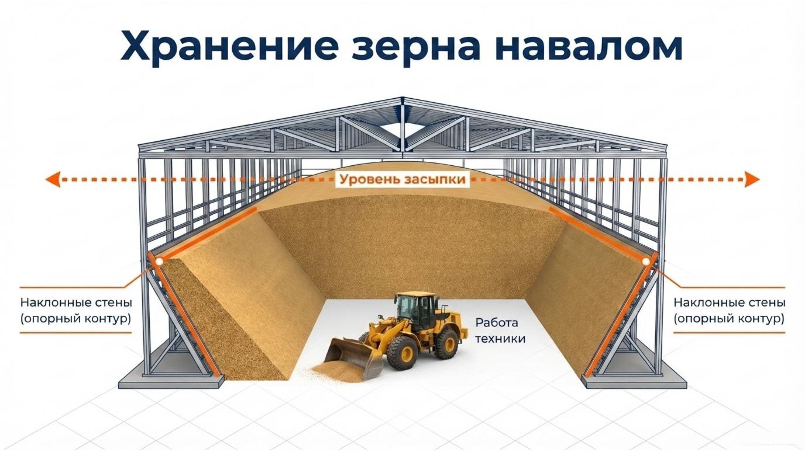
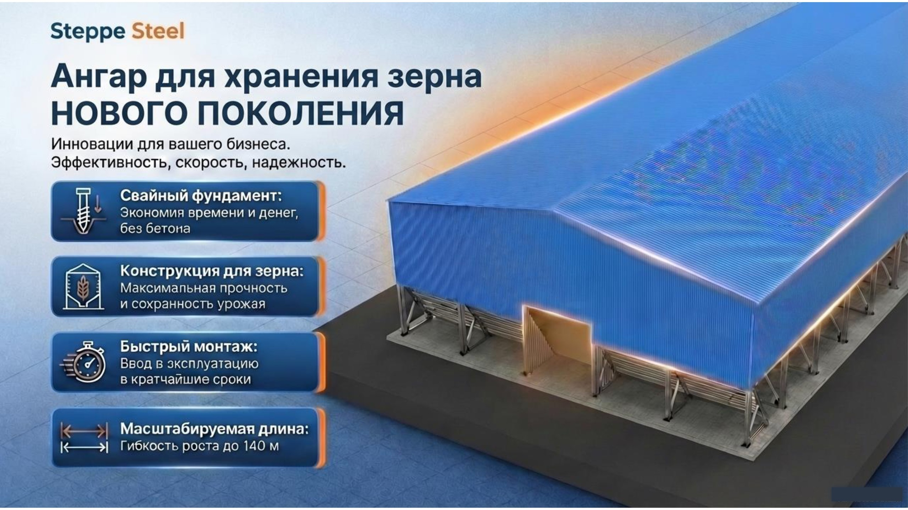
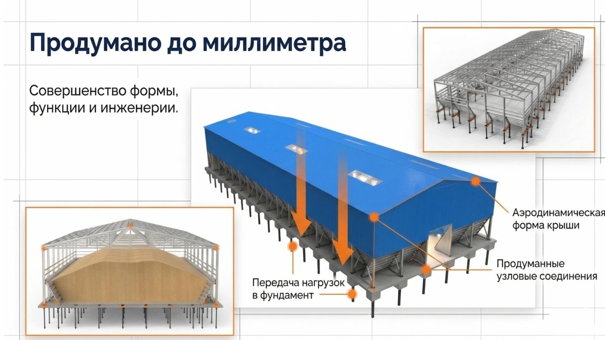
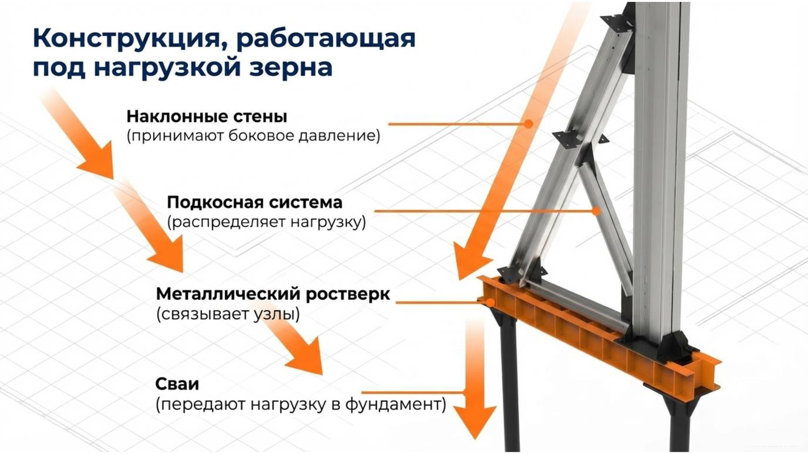

Зернохранилища нового поколения
Напольное хранение навалом на винтовых сваях — без бетона. Наклонные стены рассчитаны на боковое давление зерна, длина наращивается секциями до 140 м, комплект конструкций — за 10 дней. Проектируем, производим и доставляем с завода в Костанайской области по всему Казахстану.

Шесть решений, которые отличают этот ангар
Классический зерносклад тянет за собой бетонный фундамент и месяцы стройки. Мы спроектировали конструкцию заново — под напольное хранение, север Казахстана и быстрый монтаж.
Сколько метров нужно под ваш объём
Вместимость на 1 м длины ангара при хранении навалом — зависит от насыпной плотности культуры. В правой колонке пример: какая длина закроет 3 000 т. Как связаны тонны, кубометры и площадь — в статье о расчёте склада под зерно.
| Культура | Вместимость, т на 1 м длины | Пример: 3 000 т → длина |
|---|---|---|
| Горох | 70 т | ≈ 43 м |
| Пшеница | 67 т | ≈ 45 м |
| Кукуруза | 62 т | ≈ 48 м |
| Ячмень | 56 т | ≈ 54 м |
| Подсолнечник | 37 т | ≈ 81 м |
Вместимость — по проектному сечению при хранении навалом. Точную длину и сечение под вашу культуру рассчитает инженер.
Почему это дешевле классического зерносклада
Экономика проекта складывается из отказа от бетона, скорости болтового монтажа и того, что конструкция остаётся активом, а не закопанными деньгами.
- 01Нет бетонных работ — нет затрат на опалубку, зимний прогрев и простоев в ожидании набора прочности
- 02Болтовая сборка идёт быстрее сварной: короче монтаж — меньше расходы на оплату труда на площадке
- 03Конструкция 100% разборная — при переезде или продаже бизнеса ангар демонтируется, перевозится и перепродаётся
- 04Итог — снижение CAPEX на тонну хранения по сравнению с капитальным складом на бетонном фундаменте
Как устроено зернохранилище — в визуализациях



3D — проектные визуализации Steppe Steel. Фото монтажа наших каркасов — в Instagram @lstk.factory.
Частые вопросы о зернохранилищах
В.01Почему фундамент без бетона — это надёжно?
Зернохранилище стоит на винтовых сваях с металлическим ростверком. Диаметр, длину и шаг свай определяет расчёт под грунты вашей площадки, а сбор нагрузок отражён в разделе КМ. Мокрых процессов нет — монтаж возможен в любой сезон, включая зиму, без ожидания набора прочности бетона. Сравнение типов фундаментов — в отдельной статье.
В.02Как конструкция выдерживает давление зерна и что с вентиляцией?
Зерно навалом давит на стены вбок — поэтому стены наклонные, а держит их подкосная система. Боковое давление считается под конкретную культуру и высоту насыпи и входит в раздел КМ. Решения по вентиляции закладываются в проект под вашу технологию хранения и климат площадки.
В.03Какие сроки поставки и монтажа?
Комплект конструкций отгружаем за 10 дней собственным автотранспортом — по всему Казахстану. Конструкция 100% болтовая и собирается как конструктор: все отверстия выполнены на производстве, подгонки «болгаркой» на площадке нет. Точный график монтажа зависит от длины ангара — инженер укажет его в КП.
В.04Подходит ли проект для субсидий МСХ РК?
Да. Вместе с конструкциями вы получаете полный раздел КМ — принципиальные решения каркаса и расчёты нагрузок, которые нужны для экспертизы, банка и оформления субсидий. Чем КМ отличается от КМД и что входит в комплект — в статье о документации.
Рассчитайте зернохранилище под ваш объём
Назовите культуру и объём хранения в тоннах — подберём длину и сечение, пришлём предварительный расчёт и КП за 24 часа. Комплект конструкций — за 10 дней.